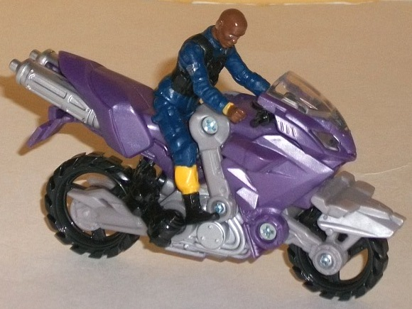
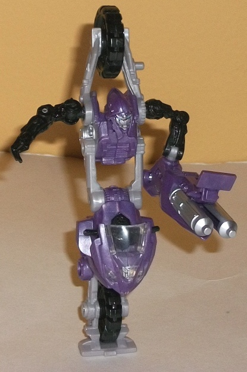
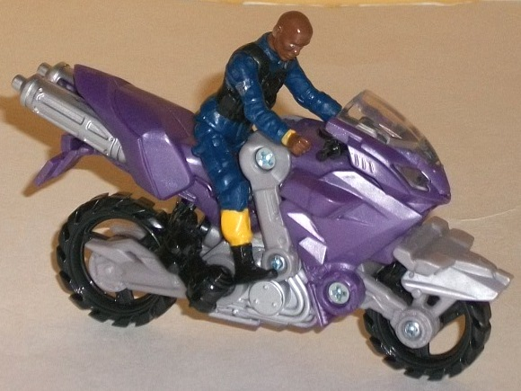
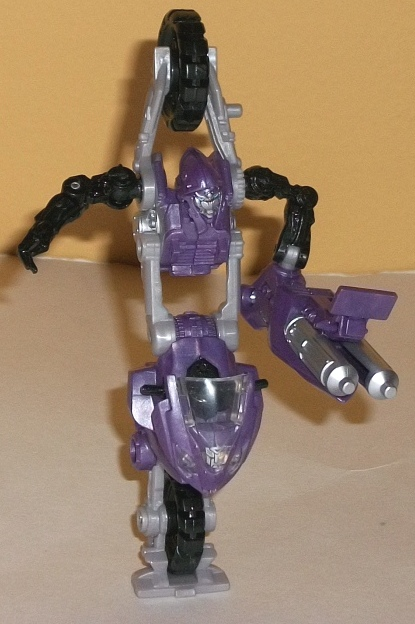
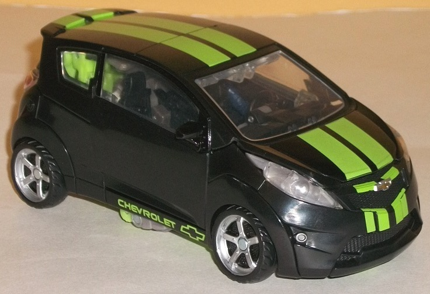
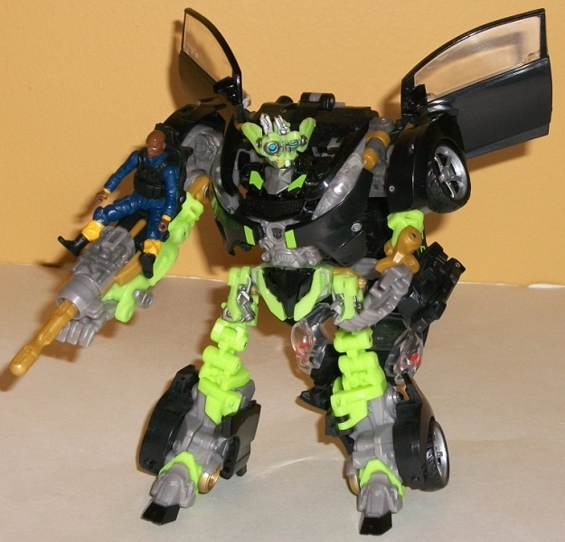

 
Allegiance : Autobot
Difficulty of Transformation : Easy
Color Scheme: Light milky gray, moderately light milk purple, black, and some silver, light sky blue, and clear plastic
Individual Rating : 6.7
(NOTE: Because this set is composed of repaints,
this is not a full-blown review. This mainly covers any changes made to
the set and the color scheme, and merely compares it to the original versions
of these molds. For a review on the original RotF Human Alliance Skids
mold w/ Arcee & Mikaela Banes, go
here
.)
 Elita-1
Elita-1


Allegiance
: Autobot
Difficulty of Transformation
: Easy
Color Scheme:
Light milky gray,
moderately light milk purple, black, and some silver, light sky blue, and
clear plastic
Individual Rating
: 6.7
Elita-1 is a repaint
of RotF Human Alliance Arcee-- maddeningly enough, considering that the
design itself is for
RotF CHROMIA
, but it
seems like movieverse Elita-1's never going to get her own mold, unfortunately.
The light glittery purple used as the main color looks really spiffy, particularly
in contrast with the black. There's unfortunately also a fair amount of
that light milky gray on her which is really blah, but it actually doesn't
look as bad as it could be, what with the purple and black accenting it
so well. The silver paint apps-- such as on the engine and tailpipes--
are also a nice touch, and the bit of light sky blue used for her optics
also really pops against her face sculpt. That said, paint on her license
plate or on a few places on the front half of her bike mode would've been
appreciated.
No mold changes have
been made to Human Alliance Elita-1.
 Autobot
Skids w/ Tech Sergeant Epps
Autobot
Skids w/ Tech Sergeant Epps


Allegiance:
Autobot
Difficulty of Transformation:
Very
Hard
Color Scheme:
Black, clear plastic,
bright lime green, light milky gray, and some silver, light red, light
lime green, light goldish brown, white, and pale metallic gold
Individual Rating
: 9.8
DotM Human Alliance Skids
follows his other toys from the line in terms of keeping his Chevy Spark
alt mode, but flipping the color scheme around so that's it's mostly black
with green stripes down the center of the vehicle mode. This looks quite
nice, as the light green contrasts exceedingly well with all that black.
There isn't much paint on the sides, but the bright green "CHEVROLET" words
& signs on below the car doors keep them from being completely black.
The taillights are also painted with a dot of light red in the middle to
make them look more like they're "on", and Skids' license plate is a little
creative, saying "SK33DZ". The silver paint apps on places like the wheel
hubs and headlights also look nice against the black. In robot mode Skids
gets a bit more green, but it's more of a brighter, "Starburst-y" variation
of light green-- and it still looks great. This is especially the case
given the brownish gold paint and plastic on him, which contrasts excellently
with the black as well, but
particularly
the bright green. There's
also some light milky gray, but thankfully it's not TOO prevalent here,
and all the brownish gold, black, and bright green plastic help to draw
attention away from it.
DotM Human Alliance
Skids doesn't have any core mold changes, but this repaint does come with
a new version of the human character Sergeant Epps. It's fairly accurate
to how he really looks, and the blue-and-black uniform he's wearing looks
nice. Epps shares the standard movement and articulation that all Human
Alliance partner figures do.
The Dark of the Moon
redeco of Human Alliance Skids gives an already incredibly well-engineered
mold a dynamite, eye-catching paint job. Elita-1 looks fairly pretty color-wise
as well, though that mold is still pretty iffy at best. Overall, my highest-recommended
figure from the DotM Human Alliance subline.
Review by Beastbot